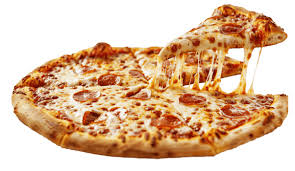

Pizza

Pizza (Italian: ['pittsa'], Neapolitan: ['pittsa']) is a savoury dish of Italian origin consisting of a usually round, flattened base of leavened wheat-based dough topped with tomatoes, cheese, and often various other ingredients (such as anchoives, mushrooms, onions, olives, pineapple, meat, etc.), which is then baked at a high tempurature, traditionally in a wood-fired oven.[1] A small pizza is sometimes called a pizzetta. A person who makes pizza is known as a pizzaiolo.
Pastries
 Baklava is a layered pastry dessert made of filo pastry, filled with chopped nuts, and sweetened with either syrup or
honey. There are several theories for the origin of this pastry, but in modern times, it is a common dessert among
cuisines of countries in West Asia, Southeast Europe, Central Asia, and North Africa.
Baklava is a layered pastry dessert made of filo pastry, filled with chopped nuts, and sweetened with either syrup or
honey. There are several theories for the origin of this pastry, but in modern times, it is a common dessert among
cuisines of countries in West Asia, Southeast Europe, Central Asia, and North Africa.